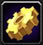
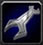

| Specialisation |
If you visit the Gnomish Engineering NPC of your faction, one of two possible quests will be presented. If you already have an active membership card for Gnomish Engineering, it will cost 2 gold to renew it to full duration. Otherwise (if you have no card or a Goblin Engineering card), it will cost 50 gold to obtain a new Gnomish card with full duration (and your Goblin card will be destroyed). And vice versa: if you want to renew or switch to Goblin Engineering, you will need to visit the Goblin Engineering NPC of your faction. If you leave your membership card in your bank, you will not be able to renew or switch it - it needs to be in your inventory or keyring. New cards are acquired immediately and placed in your inventory (or mailbox if there is no space). Renewals also apply immediately and will still result in you receiving a mail that may contain specialisation-specific schematics.
For the purpose of learning schematics, crafting items, and using items, you only count as being a Gnomish Engineer when your Gnomish card is active and in your inventory or keyring, and likewise for Goblin. When a membership card is destroyed, any worn equipment that requires that specialisation will be de-equipped and placed in the player's inventory (or mailbox if there is no space).
The book Soothsaying for Dummies no longer offers any service for Engineers.

| Salvaging |